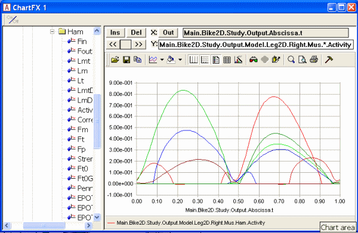
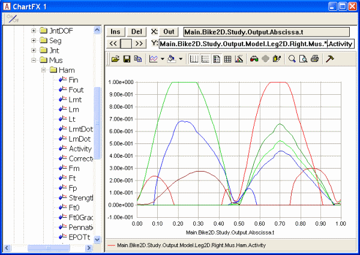
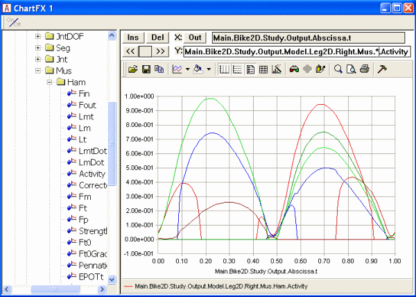

Lesson 4: Polynomial Muscle Recruitment¶
Caution
Old tutorial: This tutorial has not yet been updated to ver. 7 of the AnyBody Modeling System. Some concepts may have changed.
In the previous two lessons, we learned that linear muscle recruitment leads to no muscle synergy at all, while quadratic muscle recruitment seems to result in some synergy between the muscles. In general, the higher the order of the objective function of our recruitment problem, the more synergy we get between the muscles. This is due to the fact that higher orders tend to put higher penalization on large values in the sum and hence tend to distribute the load more evenly between the muscles.
So, perhaps if we use a higher order sum of muscle activities we may have less need for the upper bound on the muscle recruitment. AnyBody has a recruitment algorithm that lets you select your own order of the problem. Let us investigate it a little.
First, let us change the power output of the bicycle model back to a manageable but still challenging level:
// Kinematic parameters
AnyVar Cadence = 60.0; //Cadence in RPM
AnyVar MechOutput = 500; //Average Mechanical output over a cycle in Watt
Then we change the study section to the polynomial option:
// The study: Operations to be performed on the model
AnyBodyStudy Study = {
AnyFolder &Model = .Model;
Gravity = {0.0, -9.81, 0.0};
tEnd = Main.BikeParameters.T;
nStep = 100;
InverseDynamics.Criterion = {
Type = MR_Polynomial;
};
};
Now we have specified polynomial muscle recruitment, which comes down to the following objective function:
We have not, however, specified what the power p is. In the absence of a specification, AnyBody assumes p = 3, i.e. one higher than the quadratic criterion from before. When we ran the quadratic criterion with 500 W mechanical output, two of the muscle activities became constrained by the upper of 1. If we reload and rerun the model now, we get the following result:

The muscle activations are nice and smooth and the upper limit on the muscle activity is not active. It is hard to say which criterion is the right one, but it appears that for this load the third order polynomial criterion is better than the quadratic criterion from before. The third order criterion is in general a good compromise between different recruitment criteria, and this is why it is the default in AnyBody when the user makes no other specifications.
Of course, everything has a limit, and if we raise the power output a bit more to 650 W:
// Kinematic parameters
AnyVar Cadence = 60.0; //Cadence in RPM
AnyVar MechOutput = 650; //Average Mechanical output over a cycle in
Watt
…then we once again will have muscles limited by the upper bound on muscle recruitment:

The polynomial criterion allows us to select a higher order if we like. It can be done like this:
InverseDynamics.Criterion = {
Type = MR_Polynomial;
Power = 5;
};
which sets the order of the polynomial sum to 5. Reloading and rerunning the model produces this result:

So it would appear that increasing the power of the criterion get the muscles to work more and more together and allow the organism to carry larger loads without overloading any individual muscle. Of course, at some point of increasing load it will be impossible for a criterion of any order to carry it without overloading the muscles, and the polynomial criterion reacts to this situation as the quadratic criterion did, i.e. to issue a warning and automatically change to another recruitment criterion that allows overloaded muscles to give you a visual and quantitative feedback to relate to. Feel free to go ahead and increase the mechanical power of the pedaling to 800 W as in the quadratic lesson and see how the algorithm reacts.
But why not just use a very high order criterion? It seems that it would extract the maximum strength from the collective organism as we expect the living body to do.
Well, closer inspection of the figure above reveals that the high order criterion comes at a price: Some of the activations and de-activations of the muscles now happen very quickly and perhaps faster than living muscles can manage. Muscle contraction is an electro-chemical process and it takes some time to develop and release force in a muscle. The actual time depends somewhat on the circumstances and on the fiber composition in the muscle, but the time is finite and contraction or relaxation cannot physiologically happen in an instant.
In fact, the power of 5 is the upper limit of the polynomial criterion in AnyBody. This is not only because higher powers cause the muscles to contract and relax very quickly but also because higher order criteria are potentially less robust and may cause numerical instability in the simulated recruitment.
If it were in fact possible to increase the polynomial power towards infinity, then the muscle recruitment criterion would approach a min/max formulation that, in a biomechanical context, can be interpreted as a minimum fatigue criterion, and this is not without physiological relevance, so it is the topic of…
See also
Next lesson: Lesson 5: Min/Max Muscle Recruitment.
 Fix it your self
Fix it your self